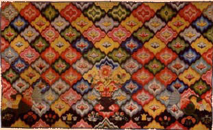

|
Stefan Bielinski Margarita Oothout probably was born late in 1736. She was the youngest child of Albany County residents Jan and Catharina Van Deusen Oothout. She grew up in the Hoosick Valley where her father was a landholder and marginal fur trader. In April 1764, she married Watervliet businessman and Albany property holder Hendrick Quackenbush. The couple set up their home on the river road just beyond the northern boundary of the city of Albany, At age twenty-eight, she was much older than most early Albany brides. As expected, her family was smaller with four children baptized in the Albany Dutch church between 1765 and 1770. However, she would not live to raise her family as two months after the birth of her daughter, Margarita Oothout Quackenbush died in May 1770. She had not reached her thirty-third birthday. Hendrick Quackenbush re-married in 1776 and lived until 1813.
She was baptized in the New York City Dutch Reformed church on January 5, 1737. Table cover made by Margarita Oothout in 1764. In the collection of the Allentown Art Museum. first posted: 3/5/02; last revised 9/25/03 |